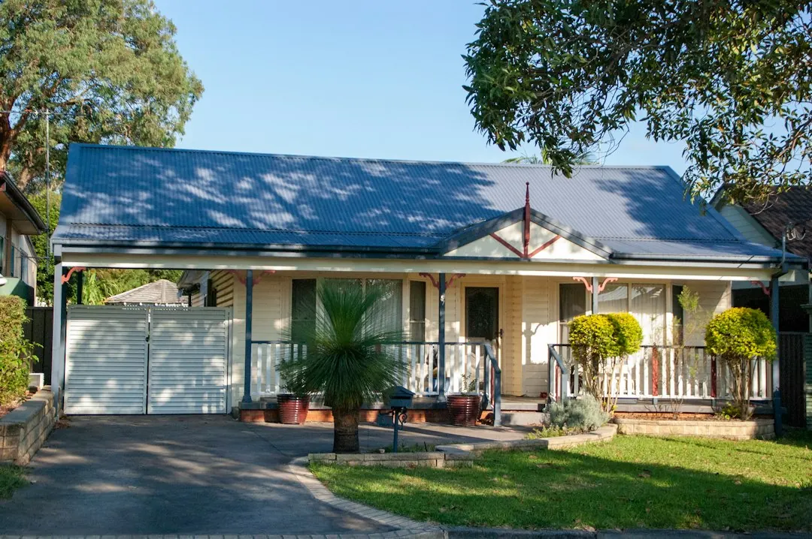

Common problems include opener or motor faults, broken springs, worn cables and rollers, off-track doors, remote issues and roller-door faults. The repair path depends on the door type, the failed part and whether replacement is more practical. Describe the suburb, door style, fault and urgency when enquiring. Hardwired opener work is handled by a licensed Queensland electrician where required, while the technician checks the door before a written quote and booking.
For homeowners comparing garage door repairs brisbane options, the useful starting point is identifying the fault, door style, urgency and likely repair path before approving work.
Garage Door Repairs Brisbane Explained
The Brisbane Garage Door Repairs service describes a repair-first process, which begins with what the door is doing rather than assuming that every failure needs a new motor or complete replacement. A door that will not close may involve an opener, safety beam, track, spring or cable issue, so the useful description includes the sound, movement and point where operation stops.
Before requesting a quote, record whether the door is sectional, tilt or roller style, whether it is powered, and whether the problem is intermittent or constant. Include the suburb and whether access is urgent. The published enquiry flow asks for the door style and whether the issue involves the opener, spring, cable, track, remote or urgent access.
- An opener that runs without moving the door points to a different inspection from a door that jams by hand.
- A noisy, bowed or sticking roller door needs the curtain, barrel, guides and spring tension considered together.
- A remote or keypad problem may need programming, code clearing or resynchronising rather than mechanical work.
Repair, parts replacement or a new door
A practical quote should separate the failed component from the wider condition of the door. The service lists opener and motor diagnosis, spring replacement, cable and roller replacement, off-track repairs, roller-door repairs and new sectional, roller or tilt door installation. That gives the homeowner a decision path instead of treating repair and replacement as interchangeable.
Replacement becomes a question when the door, motor or hardware is too far gone, while repair remains relevant where the worn part can be addressed. Ask what was found, which part is being changed, whether the door will be rebalanced or re-railed, and what remains outside the proposed work.
| Path | Best question | Information to confirm |
|---|---|---|
| Service or repair | Can the existing door remain in use? | Fault, adjustment and affected component |
| Parts replacement | Is one worn or broken part driving the fault? | Part changed, door condition and testing |
| New installation | Is replacement more practical than continued repair? | Door style, measurement, opener options and written quote |
Powered openers and electrical boundaries
Opener faults can involve motors, limit switches, safety beams, remotes or hardwired wiring. The published service says powered-opener wiring is handled by a licensed Queensland electrician where required. Ask whether the proposed work is mechanical diagnosis, opener replacement, programming or electrical work, because those are different parts of the job.
For remote and keypad issues, note how many controls are affected and whether an in-car button or external keypad also fails. The listed programming service includes pairing remotes, in-car buttons and external keypads, clearing old or lost codes, and resynchronising rolling-code openers.
If a door is stuck open, jammed shut or affected by a spring, opener or impact failure, the emergency path is intended for prompt response. Give the technician the access consequence clearly, such as being unable to secure the garage or unable to move a vehicle, so the urgency is understood before booking.
Local conditions change the practical diagnosis
Brisbane properties present different access and door contexts. The published location guidance distinguishes older post-war homes, timber Queenslanders, 1970s brick homes, townhouse infill, split-level properties, apartment basements, larger leafy blocks and steep or longer driveways. Those details can affect how the technician approaches the door, tracks, garage access and powered opener.
The service also identifies bayside salt corrosion as a local context. Rather than relying on a suburb name alone, describe the property type, driveway slope, basement or shared access, and whether the garage is exposed to bayside conditions. Chermside, Aspley, Stafford, Mitchelton, Ashgrove, Kenmore, Indooroopilly, The Gap and Mount Gravatt are among the locations named in the published coverage.
For a second local comparison, the Brisbane garage door repair guide can be read alongside the service information. Use any guide to prepare questions, then confirm the actual fault, scope and written quote with the technician handling the job.
Questions to settle before booking
A clear enquiry reduces back-and-forth and makes the quote easier to compare. Send the suburb or postcode, door style, powered or manual status, visible fault and whether the door is currently open, closed or stuck. A photo or short description of the noise and movement may also help explain the symptom, but the technician still needs to check the door and hardware.
- Which component is believed to have failed?
- Is the proposed work a repair, adjustment, parts replacement or new installation?
- Will the quote include testing after the repair?
- Does powered wiring require a licensed Queensland electrician?
- If replacement is suggested, what condition makes repair impractical?
- What access information should be provided for a basement, steep driveway or shared garage?
The published process is: describe the fault, have a technician suited to the door type and Brisbane area call back, confirm the repair path, then proceed only if the path and written quote are acceptable.
- Describe the fault. Provide the suburb, door style, powered status and whether the issue involves the opener, spring, cable, track, remote or urgent access.
- Record the access context. Mention steep driveways, longer access routes, apartment basements, shared garages or bayside exposure where relevant.
- Confirm the diagnosis. Ask whether the proposed path is a service, repair, parts replacement or new door installation.
- Review the written quote. Check the stated work, affected component, door or opener details and any electrical boundary before booking.
| Option | When to discuss it | What to ask |
|---|---|---|
| Repair | The existing door may remain practical | Which fault was confirmed? |
| Parts replacement | A spring, cable, roller or opener component is worn or broken | What part changes and what is tested? |
| New installation | The door, motor or hardware is too far gone | Which door style and opener options are quoted? |
Common questions
What information should I include in an enquiry? Include the suburb or postcode, door style, powered status, visible fault and whether access is urgent. The published process also asks whether the problem involves the opener, spring, cable, track, remote or urgent access.
Can a garage door opener fault involve electrical work? It can involve opener or motor diagnosis, limit switches, safety beams, remotes or hardwired wiring. The published service says a licensed Queensland electrician handles powered-opener wiring where required.
When is replacement considered? Replacement is considered when the door, motor or hardware is genuinely too far gone for a practical repair. Ask what inspection finding supports that recommendation and request the proposed door and opener details in writing.
Does the service cover different door styles? The published services refer to sectional, roller and tilt doors, including repairs, re-railing and new installation. State the door style early so the technician can assess the relevant hardware.
What happens after the initial enquiry? A technician suited to the fault, door type and Brisbane area calls back, checks the repair path, and proceeds only after the path and written quote are accepted.
This guide covers fault descriptions, repair choices, Brisbane property contexts, electrical boundaries and questions to ask before booking.